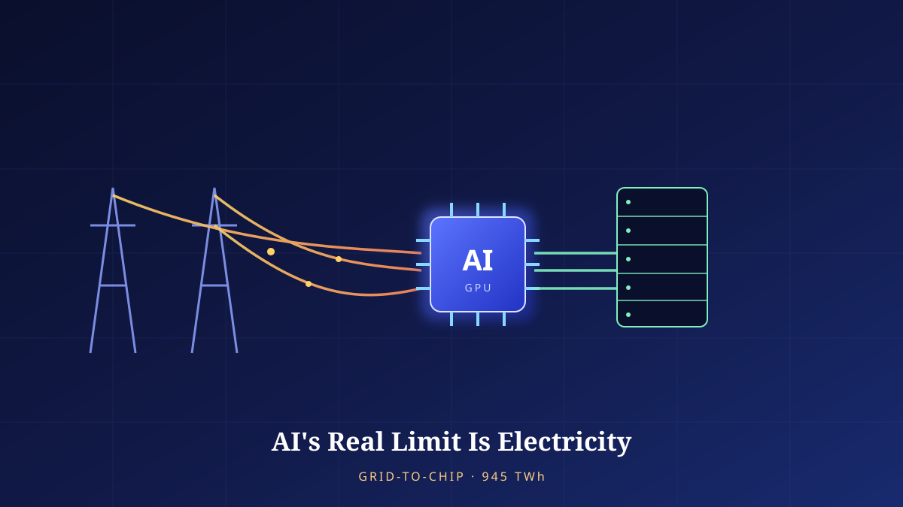

AI's Real Limit Is Electricity
Data-center power will roughly double in six years — from about 415 TWh in 2024 to about 945 TWh in 2030. The real bottleneck isn't the GPU; it's the grid that pushes electricity from power plant to rack.

It Isn't GPUs That Are Scarce — It's Electricity
For the past two years, the story of the AI industry has revolved around a single component: the GPU. Who had secured the most accelerators, and how fast the next-generation chip would be, read almost like the very yardstick of competitiveness. But the operators who have actually built and run large data centers now point, in near-unison, to a constraint that is not the chip. Their first question today is: "Where, and when, can we get the electricity?" When the primary criterion for choosing a site becomes neither fiber nor labor but available power, it means the industry's bottleneck has quietly shifted.
To understand this shift you have to change one assumption. A GPU is a product — built in a factory and shipped by boat. Electricity is a flow that must be consumed the instant it is produced. It is hard to store, moving it requires physical infrastructure, and that infrastructure takes years from groundbreaking to completion. Chip supply can be expanded within one or two years by adding foundry capacity, but the transmission and substation equipment needed to newly deliver hundreds of megawatts to a single region takes five years — sometimes more than ten — for permitting and construction alone. That simple fact, that the two clocks run at different speeds, draws the new limit line for AI infrastructure.
This shift is audible in the industry's own vocabulary. A few years ago, the opening page of a data-center business plan led with cooling methods and network latency. Today that space is taken by the "interconnection" schedule and how much contracted power can be secured. The queue between applying to a utility for a large new supply and actually receiving electricity has stretched to years in some regions, and that waiting time itself has become the variable that decides whether a project succeeds. Compute can be bought instantly with money, but contracted power at a specific location has become a resource you must line up and wait for, however much money you have.
So this piece re-reads AI not as "a problem of models" but as "a problem of infrastructure." No matter how clever the algorithm, if the electrons that run it do not flow to the right place at the right time, nothing happens. The number 945 TWh is a coordinate that compresses that physical reality.
Chapter 2. The Scale of the Number945 TWh — Doubling in Six Years
First, let's get the scale right. According to the IEA's Energy and AI (April 2025), global data-center electricity consumption rises from about 415 TWh in 2024 to about 945 TWh in 2030 — nearly double in six years. Annualized, that is roughly 15% growth per year, more than four times the average growth rate of other electricity-consuming sectors over the same period. In absolute terms alone, 945 TWh amounts to less than 3% of global electricity consumption in 2030. In the big picture, data centers are still a "small slice."
But the heart of the issue is not the total — it is the rate of growth and the concentration. Grids fail not at the national average but at specific nodes. The IEA reckons that about 80% of this growth occurs in the United States and China. The U.S. grows by roughly +240 TWh (about +130%) and China by roughly +175 TWh (about +170%) by 2030. On top of that, data centers cluster in a handful of regions — drawn to places where cheap land, communications backbone, and tax incentives overlap. Even if the figure is under 3% in national statistics, once that load condenses near a single county or a single substation, the grid there exceeds its design headroom.
Why concentration matters is captured by the "trap of the average." At the national level, data-center load has room to be absorbed gradually. But actual power planning and equipment are built around regional grids, not the nation as a whole. When multi-gigawatt load piles into one region over a short span, that region's generation reserve and transmission capacity hit their limits almost at once. Even national totals like the U.S. +240 TWh or China's +175 TWh actually condense into a few clusters and show up as localized shocks on regional grids. The faster the growth, and the tighter the geographic concentration, the worse the bottleneck — which is why a data center that is a "small slice" nationally is anything but small to the person running the grid.
The supply mix matters too. The IEA projects that renewables will fill roughly half of this increase, while natural gas covers about +175 TWh and nuclear and geothermal emerge as new drivers. In other words, 945 TWh is not filled by a "renewables-versus-fossil" binary. Because a data center must run around the clock without interruption, intermittent renewables alone are not enough, and gas and nuclear are called in to supply steady baseload. The speed of growth, the regional concentration, and the mixed supply sources — the bottleneck is born where these three overlap.
The Path Electricity Travels, From Power Plant to Rack
"Grid-to-chip" is a way of viewing, as a single whole, every layer that electricity passes through as it sets out from the power plant and finally reaches the GPU silicon. If any one link in this chain is narrow, then no matter how wide the links before and after it, total throughput is trapped by that narrow link. The chain divides roughly into five layers — generation (nuclear, gas, renewables), transmission (high-voltage, long-distance), substation (voltage step-down and distribution), the data center's incoming-power equipment, and, inside the rack, power distribution and cooling.
The bottleneck concentrates in the physical infrastructure at the front of the chain. Harvard's Belfer Center, analyzing the U.S. grid, notes that much of the transmission and distribution equipment was built to design headroom set decades ago and is now aging, leaving too little design margin to absorb the sharp load increase that AI data centers bring. The problem is not simply how much power is generated. Even if there is surplus electricity at the plant, it is of no use without transmission lines to carry it to where the data center sits and substation capacity to step the voltage down for delivery. And building or expanding that equipment takes years, as noted above.
At the far end of the chain — inside the data center — a bottleneck also appears. AI training GPUs push several times the power of older servers into a single rack. Once consumption per rack soars into the tens of kilowatts, the distribution that safely apportions that electricity and the cooling that removes the resulting heat become new constraints. Even when power has been drawn in, delivering it to the chips "densely" and cooling them becomes an engineering challenge in itself. In the end, grid-to-chip is not the problem of any single layer but a system bottleneck produced by five layers moving at different speeds.
What makes this chain especially tricky is that each layer has a different lead time and a different owner. Power plants belong to generators, the transmission network to the grid operator, substations and distribution to the utility, and the data center's internal equipment to the operator. Because a single chain is held in pieces by several parties, when one layer becomes a bottleneck the others cannot immediately fill the gap. Moreover, a grid must be operated with reserve (margin) for stability, yet a data center imposes a nearly constant, high load around the clock and erodes that margin quickly. Unlike ordinary demand that spikes momentarily, load that stays high day and night keeps equipment running near its limit at all times. So even for the same total consumption, data-center load weighs more heavily on the grid.
Who Pays for This Electricity?
Here the issue moves beyond engineering into society. When data centers arrive in a region at scale, the region's entire electricity-demand landscape is transformed. The U.S. state of Virginia has become the symbol of this debate. According to data cited by the Belfer Center, data centers consumed about 26% of Virginia's total electricity as of 2023, and the Electric Power Research Institute (EPRI) projected that, depending on conditions, the share could reach 41–59% by 2030 (a conditional figure that varies by region and scenario). A situation in which a particular class of industrial facility uses nearly half of a state's power makes political questions about how to share rates and infrastructure investment impossible to avoid.
At the core of the equity debate is cost shifting. When transmission and substation equipment is built out to meet surging data-center load, much of that investment is recovered through the rate base. In other words, part of the cost of the grid reinforced for data centers can end up on the electricity bills of the ordinary households and small businesses living in that region. The pattern — in which the profits of the IT industry concentrate in a few firms while the infrastructure costs disperse across the community — breeds the backlash of "Why should we pay for someone else's AI electricity?" Add to this the environmental burdens: water consumption for cooling, and carbon and air emissions from new gas generation.
For balance, though, the other side must be laid out honestly too. First, data centers generate tax revenue, jobs, and infrastructure investment for a region, and the increased power demand can even become a catalyst that accelerates the modernization of an aging grid. Second, several large operators have pledged to tie their new power demand to carbon-free procurement, and are in fact leading the way in nuclear and geothermal contracts. Third, thanks to economies of scale, hyperscale data centers are often more efficient per unit of computation than small, distributed servers. In short, this problem does not simplify into a "data center = evil" frame. The point is not whether they exist, but who shares the costs and benefits, and how. In rate design, applying a separate tariff to data centers so that infrastructure costs are assigned to the party that causes them, and mandating carbon-free procurement for new load, are among the tools discussed for balancing this scale.
Another axis that makes this distribution problem hard is the mismatch in speed. A data center can be built in a few months and immediately start drawing load. But the transmission and substation reinforcement to handle that load takes years. The gap in between is filled by running existing equipment harder, hastily bringing in gas generation, or, at worst, crowding out other demand. Either way, cost and risk arise, and who bears them circles back to the equity debate. In the end, the root of the rate and environmental debates is precisely the physical lead time of grid-to-chip seen in the previous chapter. Much of what looks like social conflict is, in fact, the shadow of an engineering constraint: the grid cannot grow fast.
Three Exits — Generation, Storage, Software
If the bottleneck is physical, the exits span both physics and software. The mitigations fall into three broad branches. The first is adding supply. To supply large-scale baseload stably around the clock, nuclear is a strong candidate — and standardized small modular reactors (SMRs) draw attention precisely because they can be distributed near data centers. That said, SMRs still have limited commercial track record and long permitting and construction lead times. Geothermal offers 24-hour carbon-free baseload but is constrained by location. The second branch is absorbing variability. Pairing renewables such as solar and wind with large-scale battery energy storage (BESS) can buffer intermittency, but seasonal long-duration storage remains expensive and immature.
The third branch — and the most interesting to a systems engineer's eye — is the software mitigation of making demand itself smart. The prime example is improving PUE (power usage effectiveness) by cutting cooling and power losses, and workload scheduling, which shifts delay-tolerant workloads such as training to times and regions where power is surplus or cheap. It means redesigning the data center not as a fixed load but as a flexible load that modulates its consumption according to the grid's condition. Adding generation takes ten years; fixing the scheduler takes a few months. If supply-side solutions are fundamental but slow, demand-side solutions are fast-acting but partial. The real 945 TWh can only be handled by pushing all three at once.
| Mitigation | Strengths | Limits · risks | Time horizon |
|---|---|---|---|
| Nuclear · SMR | 24-hour carbon-free baseload, high density | Long permitting/construction, limited SMR track record | Long term (5–10 yrs+) |
| Geothermal | Steady 24-hour carbon-free, land-efficient | Location constraints, upfront drilling cost | Mid–long term |
| Renewables + battery storage | Fast to build, low marginal cost | Intermittency, immature/costly long-duration storage | Mid term |
| Natural gas | Immediate stable supply, flexibility | Carbon/air emissions, stranded-asset risk | Short–mid term |
| PUE improvement · cooling efficiency | Immediate savings on existing equipment | Physical ceiling on savings | Short term |
| Workload scheduling (flexible load) | Deployable within months, spreads grid burden | Unsuited to delay-sensitive tasks, complex to coordinate | Short term |
Priorities among these three branches shift with time. This year's and next year's load must be met within the limits of equipment already built and power already contracted, so in the short term, demand-side mitigations like PUE improvement and scheduling are effectively the only fast-acting levers. Conversely, what actually underpins 945 TWh in 2030 is generation and transmission that must break ground now to be completed by then — that is, supply-side decisions. The trouble is that these two time horizons easily betray each other. Lean only on short-term demand management, and long-term supply investment is deferred; trust only in supply expansion and neglect demand, and the bottleneck arrives before the equipment is finished. In the end, mitigation is not a question of "what to choose" but of "in what order to stack them."
An increasingly prominent compromise among the three branches is co-location — building generation and the data center side by side. Rather than routing through the congested public transmission network, a data center is placed next to the generating equipment to bypass the interconnection queue itself. Typical forms pair it with land adjacent to a nuclear plant or with dedicated gas or geothermal generation. Attractive in that it skips the transmission and substation bottleneck, this approach nonetheless invites another debate. If a data center effectively monopolizes a given amount of generation, the share left for the public grid shrinks, affecting the whole region's rates and stability. A solution that bypasses the bottleneck thus reignites the equity problem — and here too the question of "distributing costs and benefits," seen earlier, returns.
The structure revealed by the table is clear. The more fundamental the solution, the longer it takes; the more immediately applicable it is, the lower its ceiling on savings. So there is no single "silver bullet." Only a portfolio strategy — stacking solutions with different time horizons, with nuclear and geothermal laying down long-term baseload, renewables plus storage absorbing mid-term variability, and PUE and scheduling putting out the short-term fires — is realistic.
ConclusionRedrawing the Future at the Speed of Electrons
When we talk about the limits of AI, we usually think of parameter counts or benchmark scores. But what the coordinate 945 TWh tells us is that this technology's growth curve is, in the end, tethered to the curve of a physical infrastructure: the power grid. Algorithms evolve at the speed of software, but the electricity that runs them flows only at the speed of power plants, transmission towers, and substations. The gap between these two speeds will define the real bottleneck of AI infrastructure for the next several years.
This perspective even changes the yardstick by which we measure AI's progress. Until now, the measures of advancement have been conspicuous ones like model size and benchmark scores. But the realistic measure in the 945 TWh era lies rather in the unseen: the efficiency of delivering the same performance on less power, the flexibility of finding idle power and moving load to it, and the negotiating power to procure electricity without conflict with local communities. The next round of the AI race is likely to be scored not in parameters but in kilowatt-hours (kWh). The winner is not whoever uses more electricity, but whoever extracts more intelligence from the same electricity.
If so, the answer lies not on one side but in alignment. Chip design and grid design must not run on separate tracks, and operators' expansion plans and communities' rate and environmental burdens must be coordinated at one table. Push all three branches at once — add generation, buffer with storage, and make demand flexible through software — but pair them with institutions that honestly assign the costs and benefits to those who cause them and those who benefit. If AI's real limit is electricity, its real competitiveness will come not from a faster chip but from the ability to make electrons flow at the right time, to the right place, at a fair price.
References
- IEA (primary projection), Energy and AI, April 2025. Data-center power demand 2024 ≈415 TWh → 2030 ≈945 TWh (about 2x), less than 3% of global electricity in 2030, ~15% annual growth over 2024–2030 (4x+ other sectors), ~80% of growth in the U.S. and China (U.S. +240 TWh/+130%, China +175 TWh/+170%), half of the increase from renewables, with natural gas +175 TWh and nuclear/geothermal as drivers. iea.org/reports/energy-and-ai/energy-demand-from-ai ; commentary: datacenterdynamics.com
- Gartner (forecast, 2026-06-10). Data-center power demand +26% in 2026; AI-optimized servers to make up 31% of data-center power in 2026 and to overtake conventional servers in 2027. gartner.com
- Harvard Belfer Center, “AI, Data Centers, and the U.S. Electric Grid.” Analysis of U.S. grid aging and design headroom being exceeded amid surging AI load. [Secondary / partially verified] Virginia data centers consumed about 26% of the state's power in 2023; EPRI projects 41–59% by 2030 (a conditional figure by region and scenario). belfercenter.org/research-analysis/ai-data-centers-us-electric-grid
- [Partially verified / estimate] “A single AI task uses up to 1,000 times the electricity of an ordinary web search” is a widely cited estimate that varies greatly with model, task, and hardware. It must always be cited as an “estimate.” Brookings, “Global energy demands within the AI regulatory landscape.” brookings.edu
- The figures in this piece (the growth bars and the grid-to-chip layer diagram) are conceptual illustrations the author produced from the figures in the sources above. The bottleneck points (transmission/substation delay, rack density) summarize discussions from the Belfer Center and industry; they are illustrative representations meant to explain structure, not quantitative values for any specific facility.
Read next
 Tech · Issue21
Tech · Issue21Mining, Called Learning: The Generative-AI Copyright and Data-Licensing War
Generative AI was built by swallowing the writing, pictures, and code humanity has piled up over centuries. That swallowing stands behind an old shield called fair use. But in 2025, courts and markets began re-measuring the shield. Lawsuits and a $1.5 billion settlement, licensing deals spreading quietly, "content signals" closing the door on the web, and a technology that asks provenance back — this is a calm map of the war over training data.
 AI · Explainer20
AI · Explainer20It Works in the Demo, Breaks in Production
An AI agent that was faultless in the conference-room demo falls apart the moment you put it on real traffic. The problem is usually not the model's intelligence but its reliability — because succeeding once and succeeding every time are entirely different disciplines of engineering. This piece calmly lays out why agents break, how to evaluate (eval) them, and what guardrails must be in place so that even when they break, they fail safely — all from the standpoint of real deployment.